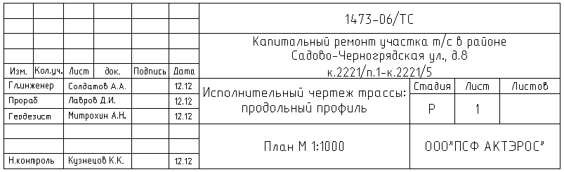

Редактор содержимого штампа в ГОСТ 21-101-97 Форма 3 виде
По сути урезаный вариант этой программы, из которой убраны большой и маленький штампы, а ГОСТ штамп занимает основное, здесь оно единственное окно программы. Сделано для тех кому не нужны большой и маленький но весьма часто приходится работать с ГОСТ штампом.
Внешний вид редактора.
В названии окна в квадратных скобках указано имя открытого файла в данном случае имя blank означает что открыт Новый файл и содерфимое штампа отвечает содержимому прототипа (чистого файла). Если нажать кнопку Новый содержимое штампа сбросится до такого состояния. Также если у нас есть уже сохраненные файлы шаблонов штампов их можно Открыть одноименной кнопкой через стандартный диалог открыть. После редактирования файл можно Сохранить или Сохранить как... например с другим именем или в другую папку. Если нажать кнопку Сохранить после редактирования бланкового (Нового) файла последует запрос Сохранить как... Чтобы изменить содержимое "чистого" штампа нужно поменять файл C:\Documents and Settings\[имя пользователя]\Application Data\geo_tools\template\blank.sht это и есть собственно прототипный штамп. Каждая ячейка штампа при вставке имеет собственное форматирование и размер шрифта. Некоторые поля редактора при вставке штампа объединяются по возможности используется автоперенос по словам в пределах ячейки штампа при вставке. Если перед номером листа (как на картинке) поставить # - знак решетки (диез) при каждой вставке штампа этот номер будет увеличиваться на единицу. После вставки штамп будет выглядеть так.
Если нажать OK то текущее состояние ячеек будет сохранено в открытом файле (если открыт blank будет предложено Сохранить как...) и открытый файл примется как текущий. С помощью команд Вставить штамп вставляется именно текущий штамп.